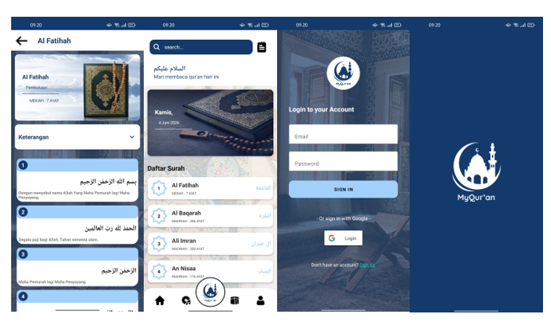
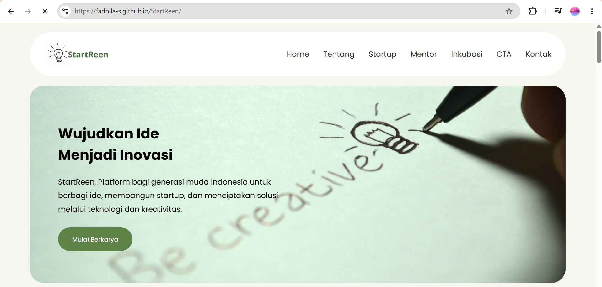
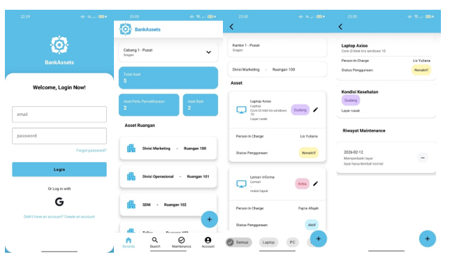
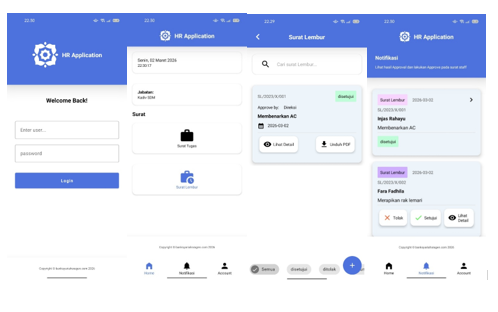

Mahasiswa Sistem Informasi yang memiliki minat pada pengembangan web, mobile application, machine learning, dan UI/UX. Mahasiswa S1 Teknologi Informasi Universitas Tidar dengan minat pada bidang data, pengembangan aplikasi Android dan Website, software quality and testing.
Saya memiliki pengalaman membuat aplikasi berbasis Android seperti MyQuran dengan fitur autentikasi Firebase, aplikasi BankAssets untuk manajemen asset pada suatu bank, dan aplikasi sumber daya manusia pada salah satu bank. Selain itu, saya juga pernah mendapatkan sertifikasi kompeten di bidang junior web developer dan junior mobile programmer. Dalam pembelajaran, saya tertarik pada basis data, analitik data, serta big data, dan pembuatan sistem informasi. Saya terbiasa menggunakan Python, SQL, java, html, css, php dan Kotlin untuk mengolah data maupun membangun aplikasi. Secara pribadi, saya adalah orang yang logis dan cepat mengambil tindakan, fleksibel dalam perencanaan, serta selalu mencari solusi praktis dalam menghadapi masalah.

Aplikasi Al-Qur'an Android dengan fitur terakhir dibaca, bookmark ayat, dan autentikasi Firebase.
Website e-commerce untuk penjualan produk fashion dengan fitur keranjang belanja, pembayaran online, dan manajemen produk.

Platform bagi generasi muda Indonesia untuk berbagi ide, membangun startup, dan menciptakan solusi melalui teknologi dan kreativitas.

Aplikasi manajemen asset untuk bank dengan fitur pencatatan, pelacakan, dan laporan asset pada salah satu bank di Sragen.

Aplikasi manajemen sumber daya manusia untuk bank dengan fitur pencatatan, pelacakan, dan laporan karyawan pada salah satu bank di Sragen.
Berperan sebagai Asisten Pengabdian Dosen dalam kegiatan pengabdian masyarakat berjudulPelatihan AI bagi Ibu Rumah Tangga: Meningkatkan Peran Orang Tua dalam Mendukung Prestasi Akademik Anak.
Mengikuti penelitian bersama dosen: Penerapan Faster RCNN + ResNet-50 untuk Identifikasi Spesies dan Stadium Parasit Plasmodium Malaria, yang dipublikasikan di TIN: Terapan Informática Nusantara. Penelitian ini mengembangkan model deep-learning untuk mendeteksi dan mengklasifikasi parasit malaria secara otomatis (mAP 0,603; akurasi ~93,9 %).
Menjadi asisten dosen pada mata kuliah Statistika & Probabilitas.
SKKNI/National | Lembaga Sertifikasi Profesi Informatika | 62019 2513 4 00301372024
SKKNI/National | Lembaga Sertifikasi Profesi Teknologi Digital | 62019 2514 3 0150056
Email: fasyasyahida@email.com Github: fasyasyahida